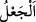

dedi. Allah: “Senin alâmetin sapa sağlam olduğun halde tam üç gece (ve gündüz)
insanlarla konuşmamandır.” buyurdu.
Zekeriyya (a.s.): “Rabb’im! (Çocuğum olacağına dâir) bana bir alâmet ver.” dedi. “
”, kelimesi yaratmak mânâsına gelir. Bir durumdan başka bir duruma intikal etmek
anlamına geldiği de söylenmiştir. Yani, Allâh’ım! Hâmileliğin olduğuna dâir bana bir
alâmet ver ki meydana geldiği zamandan îtibaren bu büyük nimete şükür ile karşılık
vereyim.” dedi. Bu isteğin, Hz. Zekeriyya’ya evlâdı olacağına dair müjde verildikten
bir müddet sonra söylenmiş olması gerekir. Çünkü rivâyet edildiğine göre Hz. Yahya,
Hz. İsa’dan altı ay veya üç yaş büyüktü. Şüphesiz Zekeriyya (a.s.)’ın duâsı Hz.
Meryem’in küçüklük çağlarında idi. Çünkü “Orada Zekeriyya Rabbine duâ etmişti.”
(Âl-i İmrân, 3/38) âyeti bunu göstermektedir. Hz. Meryem ise İsa (a.s.)’ı on veya on üç
yaşında iken doğurmuştu. Nitekim el-İrşâd ve el-Es’iletü’l-mukhime’de böyle
geçmektedir.
“Senin alâmetin sapa sağlam olduğun halde” yani senin zikir ve tesbîhe gücün
yettiği halde “tam üç gece ve gündüz insanlarla” insan kelâmı “konuşamamandır.”
İnsanların özellikle zikredilmiş olmasından anlaşıldığı üzere Zekeriyya (a.s.) zikir ve
tesbîh yapabildiği halde insan kelâmı konuşmaya muktedir olamadığı anlaşılmaktadır.
Âl-i İmran sûresinde de açıklandığı üzere gündüzleriyle beraber Hz. Zekeriyya üç gün
konuşamamıştır. Burada konuşamamanın isteyerek değil zorla olduğu anlaşılmaktadır.
Yani konuşmaktan alıkonulursun da dilsizlik şâibesi olmadan, organların sağlam olduğu
halde konuşmaya güç yetiremezsin. Derler ki: Hz. Zekeriyya o gece hanımına döndü ve
onunla buluştu ve çocuk hanımının rahmine düştü. Sabah olunca da Hz. Zekeriyya
insanlarla konuşamaz oldu.